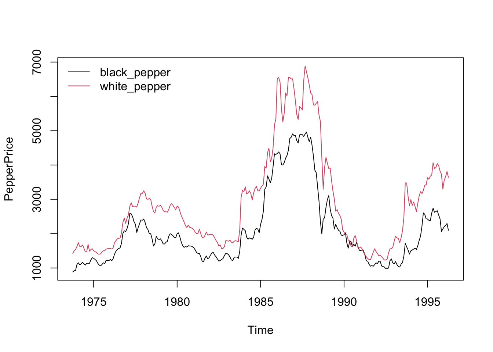
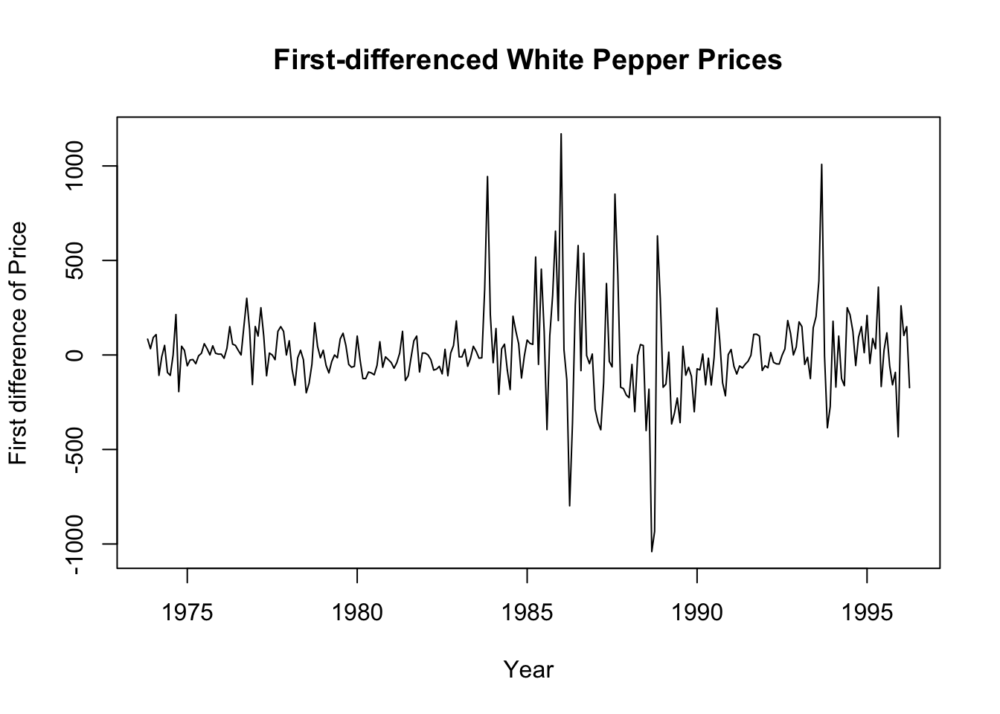
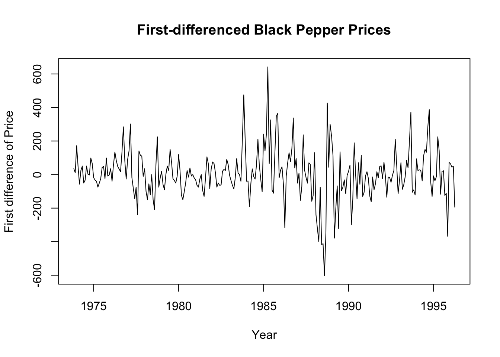

library(AER) # Applied Econometrics with R, Kleiber and Zeileis, 2008
Loading required package: car
Loading required package: carData
Loading required package: lmtest
Loading required package: zoo
Attaching package: 'zoo'
The following objects are masked from 'package:base':
as.Date, as.Date.numeric
Loading required package: sandwich
Loading required package: survival
library(tseries) #Required for the adf test
Registered S3 method overwritten by 'quantmod':
method from
as.zoo.data.frame zoo
library(vars)
Loading required package: MASS
Loading required package: strucchange
Loading required package: urca
library(urca)
Load Pepper Price time series data and check the first 6 rows of observations.
data("PepperPrice") head(PepperPrice)
black white
[1,] 884.050 1419.78
[2,] 919.329 1503.55
[3,] 930.350 1536.62
[4,] 1102.310 1629.22
[5,] 1150.810 1737.24
[6,] 1093.490 1629.22
There are two series here: black pepper and white pepper. Let’s understand the time series components better:
# tsp stands for "Time Series Properties"tsp(PepperPrice)
[1] 1973.75 1996.25 12.00
tsp above stands for time series properties. It seems like we have monthly data (frequency of 12), starting in year 1973 and ending in year 1996.
We can use the window() function to inspect the values of the variables by setting start and end dates. In the example below, we start from the start of the sample and display values up until the 6th data point of 1974.
window(PepperPrice, end =c(1974, 6))
black white
Oct 1973 884.050 1419.78
Nov 1973 919.329 1503.55
Dec 1973 930.350 1536.62
Jan 1974 1102.310 1629.22
Feb 1974 1150.810 1737.24
Mar 1974 1093.490 1629.22
Apr 1974 1117.740 1620.40
May 1974 1168.450 1671.11
Jun 1974 1117.740 1578.51
8.1.1 Task 1
Change the names of the variables black and white to black_pepper and white_pepper.
Provide a time-series plot of the white_pepper and black_pepper prices.
Let us start by plotting the data:
plot(PepperPrice, plot.type ="single", col =1:2)legend("topleft", c("black_pepper", "white_pepper"), bty ="n", col =1:2, lty =rep(1,2))

plot(PepperPrice, ...) is the base R plot function for time series objects.
plot.type = "single" ensures that multiple time series within PepperPrice are plotted on the same graph (rather than separate subplots).
col = 1:2 assigns different colors to the time series (we use R defaults above)
The second line after plot is about legend.
legend("topleft", ...) places the legend in the top-left corner of the plot.
c("black", "white") are the legend labels for the two time series.
bty = "n" removes the legend box (makes it look cleaner).
col = 1:2 matches the line colors (black and red).
lty = rep(1,2) sets line type to solid (lty = 1) for both series.
8.1.3 Task 3
Find the order of integration of white_pepper and black_pepper prices.
8.1.3.1 Guidance
Apply Dickey Fuller test without trend in test regression
adf.test(PepperPrice[, "white_pepper"])
Augmented Dickey-Fuller Test
data: PepperPrice[, "white_pepper"]
Dickey-Fuller = -1.6001, Lag order = 6, p-value = 0.7444
alternative hypothesis: stationary
adf.test(PepperPrice[, "black_pepper"])
Augmented Dickey-Fuller Test
data: PepperPrice[, "black_pepper"]
Dickey-Fuller = -1.6434, Lag order = 6, p-value = 0.7262
alternative hypothesis: stationary
We cannot reject the null hypothesis of unit root.
Let us apply Augmented Dickey-Fuller (ADF) Test with 12 lags (because of the monthly frequency of the data, it likely to observe Autocorrelation up to 12 lags). Here, we have selected the lag length with some intuition. We will use another R command to choose the optimum lag length with the help of AIC (Akaike Information Criterion).
adf.test(PepperPrice[, "white_pepper"], k =12)
Augmented Dickey-Fuller Test
data: PepperPrice[, "white_pepper"]
Dickey-Fuller = -2.5763, Lag order = 12, p-value = 0.3332
alternative hypothesis: stationary
adf.test(PepperPrice[, "black_pepper"], k =12)
Augmented Dickey-Fuller Test
data: PepperPrice[, "black_pepper"]
Dickey-Fuller = -2.3677, Lag order = 12, p-value = 0.4211
alternative hypothesis: stationary
Both series are still with a unit root. They are non-stationary.
Since the plots did not show a clear deterministic trend, we can proceed by differencing. We re-apply the Augmented Dickey-Fuller Test on the first differenced series.
adf.test(diff(PepperPrice[, "white_pepper"]))
Warning in adf.test(diff(PepperPrice[, "white_pepper"])): p-value smaller than
printed p-value
Augmented Dickey-Fuller Test
data: diff(PepperPrice[, "white_pepper"])
Dickey-Fuller = -5.8575, Lag order = 6, p-value = 0.01
alternative hypothesis: stationary
adf.test(diff(PepperPrice[, "black_pepper"]))
Warning in adf.test(diff(PepperPrice[, "black_pepper"])): p-value smaller than
printed p-value
Augmented Dickey-Fuller Test
data: diff(PepperPrice[, "black_pepper"])
Dickey-Fuller = -4.973, Lag order = 6, p-value = 0.01
alternative hypothesis: stationary
The differenced series are statonary for both indicators.
8.1.4 Task 4
Plot the first differenced series
# Plot the first differenced white pepper priceplot(diff(PepperPrice[, "white_pepper"]), xlab ="Year", ylab ="First difference of Price", main ="First-differenced White Pepper Prices")

# Plot the first differenced black pepper priceplot(diff(PepperPrice[, "black_pepper"]), xlab ="Year", ylab ="First difference of Price", main ="First-differenced Black Pepper Prices")

We can also see from the above plots that the first differenced series are stationary.
The white and black pepper prices are integrated of order 1, i.e. they are \(I(1)\).
8.1.5 Task 5
Re-apply the ADF test by choosing the optimum lag length using AIC (Akaike Information Criterion). Set a maximum of 12 lags.
8.1.5.1 Guidance
We use the vars R package to find the optimum lag length for our ADF test.
lag_selection <-VARselect(PepperPrice[, "white_pepper"], lag.max =12, type ="const")# print the resultshead(lag_selection)
# Extract suggested lag from AIC criterionoptimum_lag <- lag_selection$selection["AIC(n)"]print(optimum_lag)
AIC(n)
12
# Run ADF test with the selected lagadf.test(PepperPrice[, "white_pepper"], k = optimum_lag)
Augmented Dickey-Fuller Test
data: PepperPrice[, "white_pepper"]
Dickey-Fuller = -2.5763, Lag order = 12, p-value = 0.3332
alternative hypothesis: stationary
You may replicate the above for the black pepper price and also for the first-differenced series.
Also, you may replicate the above analysis using logarithmic series.
8.1.6 Task 6
Replicate the ADF test including trend in the test regression.
Please note that this test is only for exercise purposes (to show how it could be done in R).The plot of our white and pepper price series do not suggest existence of a deterministic trend. Hence, the results obtained below will not be used in the analysis further.
8.1.6.1 Guidance
We use R’s urca library.
# library(urca)# Run the ADF test with trendadf_trend <-ur.df(PepperPrice[, "white_pepper"], type ="trend", lags =1)# Print test resultssummary(adf_trend)
###############################################
# Augmented Dickey-Fuller Test Unit Root Test #
###############################################
Test regression trend
Call:
lm(formula = z.diff ~ z.lag.1 + 1 + tt + z.diff.lag)
Residuals:
Min 1Q Median 3Q Max
-952.60 -92.97 -18.41 65.97 1155.13
Coefficients:
Estimate Std. Error t value Pr(>|t|)
(Intercept) 50.491863 34.431212 1.466 0.1437
z.lag.1 -0.017740 0.009639 -1.841 0.0668 .
tt 0.043479 0.177088 0.246 0.8062
z.diff.lag 0.290817 0.058798 4.946 1.35e-06 ***
---
Signif. codes: 0 '***' 0.001 '**' 0.01 '*' 0.05 '.' 0.1 ' ' 1
Residual standard error: 218.1 on 265 degrees of freedom
Multiple R-squared: 0.09145, Adjusted R-squared: 0.08117
F-statistic: 8.892 on 3 and 265 DF, p-value: 1.235e-05
Value of test-statistic is: -1.8406 1.2023 1.7202
Critical values for test statistics:
1pct 5pct 10pct
tau3 -3.98 -3.42 -3.13
phi2 6.15 4.71 4.05
phi3 8.34 6.30 5.36
# type can take on: none; drift; trend
In the next section, we will check for a cointegrating relationship between these variables.
Kleiber, C., and A. Zeileis. 2008. Applied Econometrics with r. Springer.